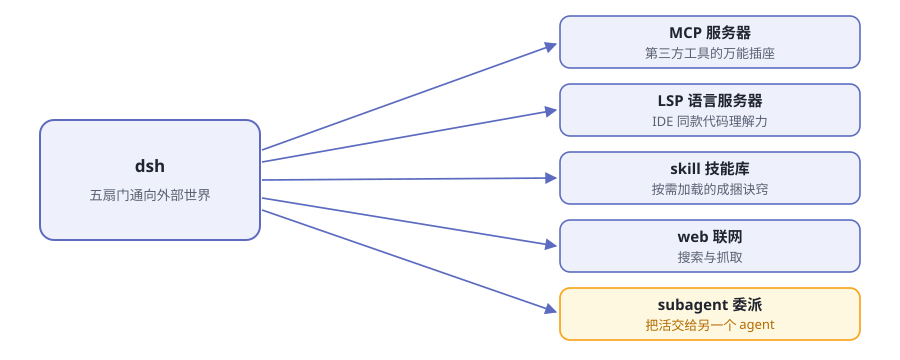

第10章 连接外部世界¶
阅读提示 前面九章，器官都在电脑里。可真实的活在电脑外面：第三方工具、代码智能、网上资料、甚至别的 agent。这一章认全 dsh 的五扇门。
五扇门¶

图10-1 dsh 的五扇门
表10-1 五扇门速览
| 门 | 通向哪 | 一句话 |
|---|---|---|
| MCP | 第三方工具服务器 | 万能插座，对方会说 MCP 就能插 |
| LSP | 语言服务器 | 给 agent 配上 IDE 同款的代码理解力 |
| skill | 技能库 | 成捆的"干活诀窍"，按需加载 |
| web | 互联网 | 搜索与抓取 |
| subagent | 别的 agent | 把一部分活委派出去 |
MCP：万能插座¶
MCP（Model Context Protocol）是行业里的通用协议：任何工具只要实现了 MCP 服务端，dsh 就能作为客户端接上它，把它的能力变成模型可用的工具。
官方给了个现成例子 mcp-memory：把一个第三方记忆服务器接进来当 overlay，agent 就有了跨会话的外部记忆。
类比：dsh 自带的手是"原厂配件"，MCP 是通用插座——别人造的手，插上来就能用。
LSP：IDE 同款理解力¶
LSP（Language Server Protocol）是编辑器世界的标准：每种语言都有自己的语言服务器，提供查定义、找引用、看诊断这类服务。
dsh 把 LSP 接了进来：一个通用 stdio 提供方 + 一个面向模型的 lsp 工具。效果是：agent 读代码不再只靠"用眼睛看文本"，而是能问语言老师"这个符号定义在哪、这里有没有错"。
skill：按需加载的诀窍¶
skill（技能）是成捆的"怎么干某类活"的说明书。机制分三层：
- 提供方注册表：技能从哪来（本地目录是默认提供方）
- 目录：模型能看到有哪些技能
- 加载器：需要时才把具体内容装进上下文
妙在"按需"：不干活时不占书桌，干到那份活才加载那捆诀窍。社区约定俗成的技能还会放在共享目录里，多个 agent 产品共用。
web：联网的眼睛¶
web 能力 seam：搜索提供方 + 抓取提供方，外加面向模型的 web 工具。agent 从此能查资料、读网页——深度调研类任务的基础。
subagent：委派之门¶
最有意思的一扇门。subagent 让模型把一部分活交给另一个 agent，而自己面前只有一个统一的委派工具。
工具背后长什么样？官方说法是"千差万别"：
- 可以是新开一个子 agent，在同一台机器上并行干活
- 也可以把一个轮次委派给另一个产品——对，委派到别家去
又是第 4 章的思想：模型只认"委派"这个动作，不认背后是谁在干。换个委派提供方，模型毫无察觉。
🧪 本章实验¶
实验 10-1 ★｜让它联网 目标：看 web 工具干活。 步骤：问 agent 一个需要最新信息的问题（它本地不可能知道的事）。 验收：它先搜索/抓取，再基于网上内容回答，并给出来源。
实验 10-2 ★★｜翻一翻技能目录 目标：对 skill 的形态有体感。 步骤：问 agent"你现在有哪些可用的技能"，或翻一翻本机的技能目录。 验收：你能指着一个具体技能说出它是"干什么的诀窍"。
🤔 思考题¶
- ★ MCP 被称为"万能插座"——统一协议对生态意味着什么？想想充电接口统一之前的世界。
- ★ skill 为什么"按需加载"而不是全部塞进系统提示词？
- ★★ 委派给"另一个产品的 agent"——这会带来什么新的信任问题？
📝 小结¶
- 五扇门——MCP（第三方工具）、LSP（代码智能）、skill（诀窍）、web（联网）、subagent（委派）
- MCP 是万能插座——接上即成为模型可用的工具
- skill 按需加载——不占平时的书桌
- subagent 背后千差万别——子 agent 或别家产品，模型只认"委派"这个动作
第三部分结束。最后一部分，你自己上手。➡️ 第11章 你的第一个插件